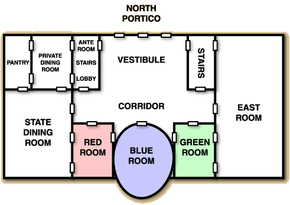
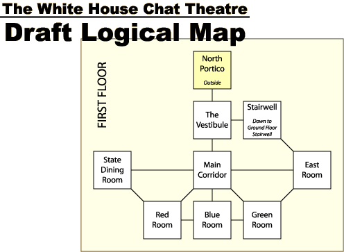

Building Blocks: MapsDecember 13, 2001 – I've now spent a total of three columns studying rooms in pretty painstaking details. First I discussed how to describe rooms. Then I talked about how to detail rooms. Finally, I offered suggestions for how to name details. With all of that said and done, you should be able to write a fairly decent room. Maybe several of them.This week, I want to approach things from the opposite direction, moving upward instead of down. In other words, I want to offer advice on how you connect multiple rooms into a single cohesive whole. This is: the art of the map. The following diagram (see left) shows how all of these different components fit together, in brief. We'll be returning to this diagram from week to week as our numbers of building blocks increase. In reality it's a bit cheeky to suggest that a map is something that's built to connect together existing rooms. If you're designing a cohesive and thematic world you'll actually be doing the opposite. You'll figure out a world that you want to create, then you'll map it, and then, based upon your map, you'll figure out what rooms to create.
When I talked about rooms in early November I said that there were two different ways that you could determine room sizes: mechanically or utilitarianly. If you did it mechanically, each room was a specific, set size (i.e. 10'x10'), or a couple of set sizes (i.e., 10'x10' or 20'x20' or 40'x40' or 80'x80'), as is done in The Eternal City. If you select room sizes utilitarianly, each room was the size it needed to be (whether than be 10'x5', 200'x10' or something really weird), as is done in Castle Marrach. Obviously, which of these methods you choose to use has a huge affect on how your maps work. If you decide to select your room sizes mechanically, creating a map is very simple. You pull out a piece of graph paper and you carefully section out your game world, square by square. Then you figure out which graph squares are equivalent to rooms, and you create those rooms. Very simple, but also a somewhat subpar method in my opinion. The problem is that you waste lots of time describing rooms that are of very little importance, simply because they happen to lie between point A and point B. (And then players have to waste time moving through those rooms.) If, on the other hand, you decide to select your room sizes utilitarianly, you suddenly have a lot of power. You can shape your overall map based upon the realities of how a game will be played within its confines — you include those rooms which will be used and minimalize those which won't be. By creating a map based on utilitarian rooms you're engaging in the art of abstraction ... and doing so is what the rest of this article is going to be about. The Art of Physicality The type of map that you're probably most used to is what we call a physical map here at Skotos. It tends to be a fairly accurate representation of real spatial relationships. There's a scale, that shows the relation of the map's distances to the real world's distances. Likewise, directions are almost totally accurate when compared to the real world. Physical maps are pretty handy things. And, even though that I argue that you'll eventually need to create that abstract map, which matches up with your utilitarian rooms, you still need to start with a physical map first. You must understand how an area actually fits together, in reality, before you can turn it into an online game world. Otherwise, you can accidently end up with a world that is unrealistic. And players will figure out that your world doesn't neatly fit together — trust me. When you're designing a physical map for your game, you could approach it from one of two directions. Most likely you'll be creating a totally new world. In that case, go wild. Stay far, far away from graphed or hexed paper and instead draw on nice, blank pieces of tree bark (or computer electrons if you prefer). Tape bunches of paper together if you need to. You don't want your world to be constrained by the sizes of paper or grids you happened to have available when you started drawing. Alternatively, you might be designing a game based upon some real location. In this case, you'll want to dig up real maps of that location, to help you get started. The research can often be as much work as creating something from scratch. About a month and a half ago, I started to design a Chat Theatre of The White House. Much to my surprise, it was hard to find a good physical map on the Internet. I located a hard-to-read isomorphic map at www.whitehouse.gov, but had to actually go to offline sources to figure out the rest. Here's what I came up with, for a physical map of the first floor of the White House:  As you can see the first floor of the White House has six main rooms. Taking up the entire east side is The East Room. In the north of the center is the Vestibule (yeah, they do use fancy names in the White House). In the south of the center, running east to west, are three more rooms: The Green Room, The Blue Room, and The Red Room. Finally, taking up the southwest corner of the first floor is The State Dining Room. There is some other stuff there — some stairs, a pantry, a private dining room, a lobby, and an ante room — and you can see it all on the physical map, but it's less important. The crucial point here is that we've now got a physical map and it shows us what this particularly locale really looks like. And you need to understand reality before you can begin treading through realms of abstraction. Abstracting Art When you abstract your physical map you'll be creating something called a logical map. It will contain individual nodes, representing rooms, and lines between those rooms, representing directions of travel. Exact sizes will be lost because, following the utilitarian method of room design, a room is a room. We'll throw out some rooms too, and we'll be pretty free with the directions that we use to navigate between different nodes. The object is to create an in-game location that's easy to traverse. Here's what my logical map looks like for the first floor of the White House:  Here's some of the more interesting stuff that I did while creating this map:
Overall, I followed two basic rules, the same two rules that you should follow whenever you're abstracting a physical map into a logical map: map intuitively and map minimalistically. Building a Map Now you've got the basics in hand — an understanding of the differences between physical and logical maps, and some ideas about how you can make a logical map more efficient for your players. Let me offer my own suggestions about how you can build a map for your game, step-by-step. Unlike some of the previous processes I've offered, building a map is a really freeform thing. This is clearly just one of many ways you can do it. 1. Draw your Physical Map As I've already noted you want to start off with a real, physical map. Draw it by hand, or photocopy it out of your favorite reference, but make sure you understand how your world fits together first. (In actuality, you'll probably be mapping your world one zone at a time, but we'll discuss that more fully next week.) 2. Determine the Important Rooms You're not going to want to actually depict every locale from your physical map as an individual room. Instead, you want to make sure that players can enjoy the important rooms and ignore the unimportant ones. So, start off by drawing your important rooms in little boxes on a piece of paper, arranging them in approximate spatial relation to each other. Remember that some rooms aren't technically rooms. They may be large outside areas, or you may even decide to split up a single "room" into multiple in-game room locations. After you're done drawing in your important rooms on your logical map, you'll find that there are three types of unimportant rooms left:
3. Figure out your Directions Now that you've got all of your important rooms laid out, draw those lines connecting them up. Here's a few rules for directions:
4. Put in those Corridors As you're linking up your rooms, it should be obvious how many sections of corridor you need to include to make the connections between your rooms work. Sometimes you might ignore a corridor totally, most likely because it's just connecting together two rooms, and is thus very simple. At other times you'll just want to try and minimize those corridor rooms. 5. Delete a Few More Rooms Go back and try and delete a few more rooms. Really. Unnecessary rooms can be the bane of game players. And, they take valuable time for you to describe — possibly a few hours, possibly a day each. Give yourself and your players a break. If you delete rooms you might have to rearrange your directions to make the connections work well again. 6. Add Additional Directions Sometimes you might want to go in and add some addition directions, to make things simpler for your players. However, do this with caution because it'll often violate one of my above rules: making directions reciprocal. For example, looking at my White House I might decide I really need to put an eastern exit into the Green Room, leading to the East Room, in addition to the normal northeast exit. This could help players out who expect an exit to be east because of the descriptions of the room, but will confuse them later when they try to go west to get back out of the East Room, and instead finds themselves in the Main Corridor. Generally, it's better to craft your descriptions so that they make your abstractified directions obvious. If a new direction can be made reciprocal, it's a lot safer to put it in. (For example, the standard route between the Vestibule and the Stairs in the White House is east-west. If I thought it would simplify things, there'd be no reason not to add northeast-southwest.) 7. Add Sight Lines Before you finish up your map you should consider sight lines. Can you see from room A to room B, even if you can't move there? This most frequently happens when you have adjacent inside and outside rooms, and thus windows in-between. For example, it's entirely possible that there's a sight line between the Stairwell and the North Portico, though I didn't mark it on my logical map. Draw these sight lines in as dashed lines on your logical map. At some point, much later in design, you'll decided how to deal with these sight lines in your actual game. 8. Continue with the Next Zone That's it, at least for your current zone. What are these strange zones I've been describing? They're a peculiarity of online game design which you may or may not decide to use, and also the topic of next week's column. See you then!
|